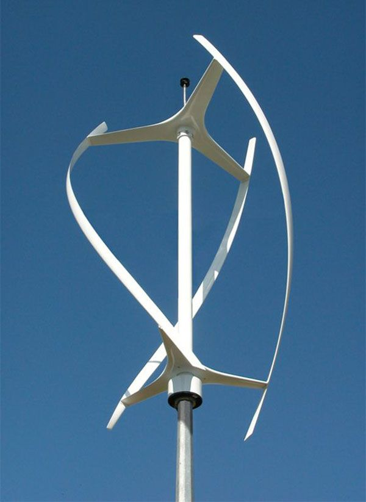
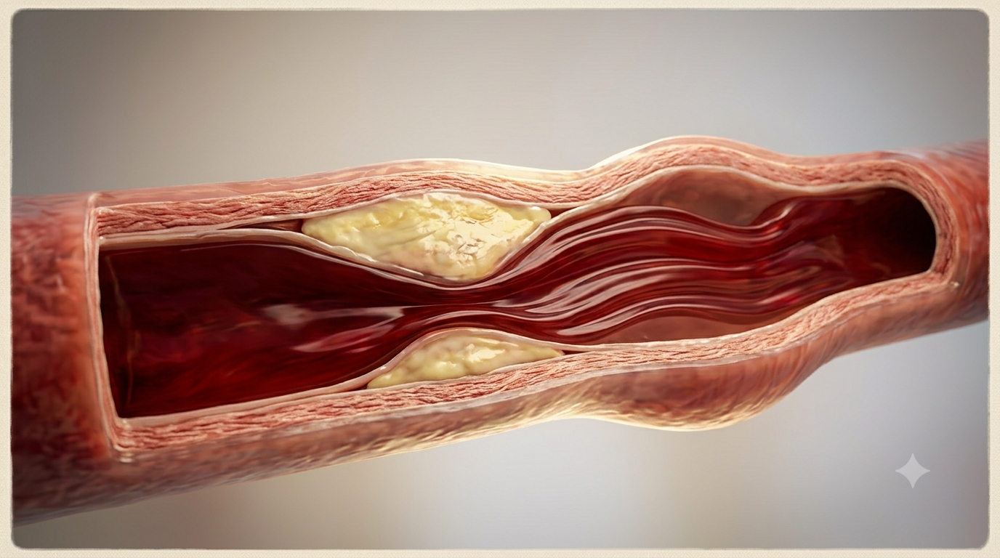
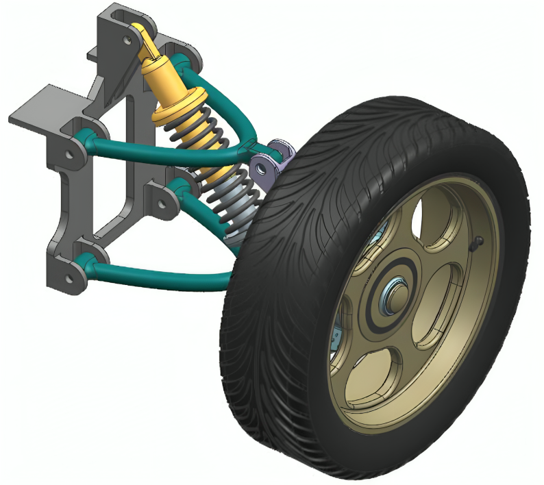

FOURNIER Thomas
Home
About
Resume
Projects
Contact
Research Internship at Universitat Politècnica de València

Design of a wind turbine

Computational Fluid Dynamics (CFD) of Arterial Blood Flow
Aerodynamic Analysis of a F1 Rear Wing

Design of a suspension system
Plasticity Analysis of an Automotive Chassis Rail